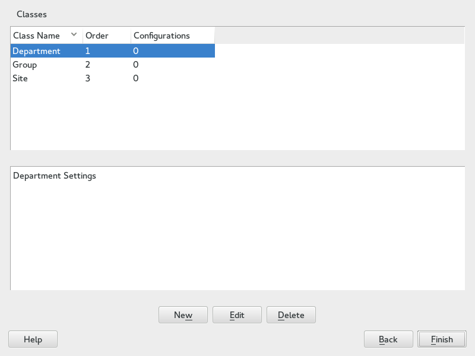

6.2. Classes
Classes represent configurations for groups of target systems. Unlike rules, classes need to be configured in the control file. Then classes can be assigned to target systems.
Here is an example of a class definition:
<classes config:type="list"><class><class_name>TrainingRoom</class_name><configuration>Software.xml</configuration></class></classes>
In the example above, the file Software.xml must be placed in the subdirectory classes/TrainingRoom/. It will be fetched from the same location as the AutoYaST control file and rules.
If you have multiple control files and those control files share parts, better use classes for common parts. You can also use XIncludes.
Using the configuration management system, you can define a set of classes. A class definition consists of the following variables:
-
Name: class name
-
Description:
-
Order: order (or priority) of the class in the stack of migration

You can create as many classes as you need, however it is recommended to keep the set of classes as small as possible to keep the configuration system concise. For example, the following sets of classes can be used:
-
site: classes describing a physical location or site,
-
machine: classes describing a type of machine,
-
role: classes describing the function of the machine,
-
group: classes describing a department or a group within a site or a location.
A file saved in a class directory can have the same syntax and format as a regular control file but represents a subset of the configuration. For example, to create a new control file for a computer with a specific network interface, you only need the control file resource that controls the configuration of the network. Having multiple network types, you can merge the one needed for a special type of hardware with other class files and create a new control file which suits the system being installed.